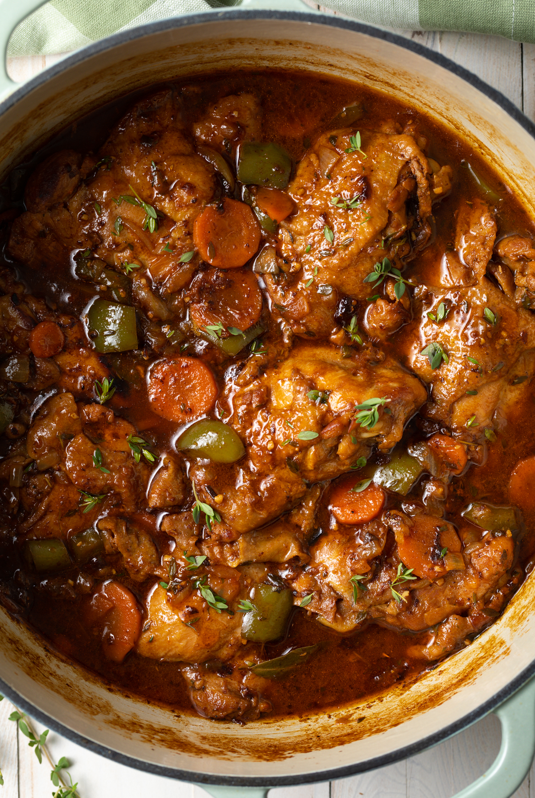

Stew Chicken

Description
This Jamaican Brown Stew Chicken is full of Caribbean flavor and a
perfect main dish for any day of the week. It’s the perfect stewed
chicken dish when you want to have a taste of the islands..
Ingredients
3 lbs chicken thighs boneless, skinless
1 Tablespoon brown sugar
2 teaspoons browning
2 teaspoons garlic powder
2 teaspoons onion powder
2 teaspoons salt or to taste
1 teaspoon paprika
1 teaspoon dried thyme
½ teaspoon black pepper
¼ teaspoon allspice
1 yellow onion chopped
3 spring onions chopped
½ green pepper chopped
½ red pepper chopped
1 scotch bonnet seeds removed and chopped
4 garlic cloves chopped
1 inch ginger chopped
¼ cup oil
2 Tablespoons ketchup
1 cup chicken broth
½ cup water
Directions
-
Add chicken, brown sugar, browning, garlic powder, onion powder, salt,
paprika, dried thyme, black pepper, allspice, onions, green pepper, red
pepper, scotch bonnet, garlic cloves, and ginger to a bowl and mix,
rubbing seasoning into the chicken. Cover and marinate in the fridge for
at least 1 hour or overnight.
-
Remove peppers, onions, garlic, ginger and thyme from chicken and set
aside. Heat oil in large skillet over medium heat and add chicken, brown
for about 1-2 minutes per side. Remove chicken and add reserved onions
and peppers to the skillet and sauté until softened, for about 5
minutes. Add chicken back to skillet along with chicken broth, water,
and ketchup.
-
Bring mixture to a simmer and cover and simmer for 30 minutes, stirring
occasionally. Remove cover and simmer for an additional 10 minutes, to
reduce the gravy. Serve and enjoy.